Numpy cheat sheet
Preliminary remark: For the random part, one is expected to run a command like
import numpy as np
rng = np.random.default_rng(12)before anything, to call the generator rng.
Matrix creation
Creation: vector case
| Code | Result |
|---|---|
x = np.zeros(9) |
|
x = np.ones(9) |
|
x = np.full(9, 0.5) |
|
x = np.array([0, 0, 1, 0, 0, 0, 0, 0, 0]) |
|
x = np.arange(9) |
|
x[::-1] |

|
x = rng.random(9) |
Creation: matrix case
| Code | Result |
|---|---|
M = np.zeros((5, 9)) |
|
M = np.ones((5, 9)) |
|
M = np.array( |
|
M = np.arange(45).reshape((5, 9)) |
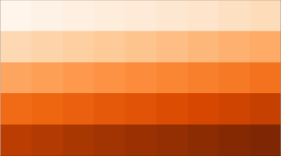 |
M = rng.random((5, 9)) |

|
M = np.eye(5, 9) |
|
M = np.diag(np.arange(5)) |
|
M = np.diag(np.arange(3), k=2) |
|
Meshgrid (🇫🇷: maillage)
nx, ny = (8, 3)
x = np.linspace(0, 1, nx)
y = np.linspace(0, 1, ny)
xx, yy = np.meshgrid(x, y)| x | y | xx | yy |
|---|---|---|---|
Creation: tensor cases
| Code | Result |
|---|---|
T = np.zeros((3, 5, 9)) |
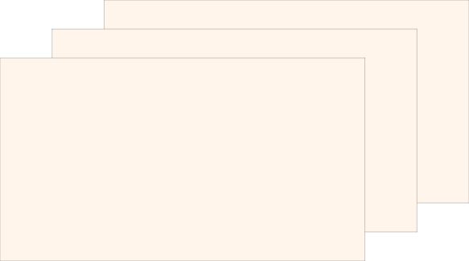 |
T = np.ones((3, 5, 9)) |
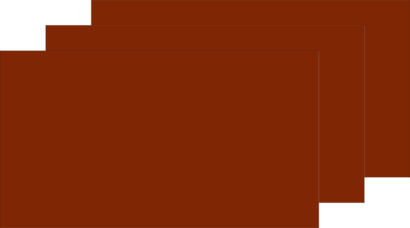 |
T = np.arange(3 * 5 * 9).reshape(3, 5, 9) |
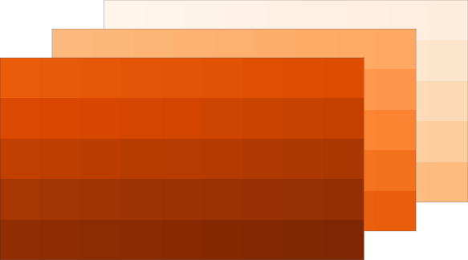 |
T = rng.random((3, rows, cols)) |
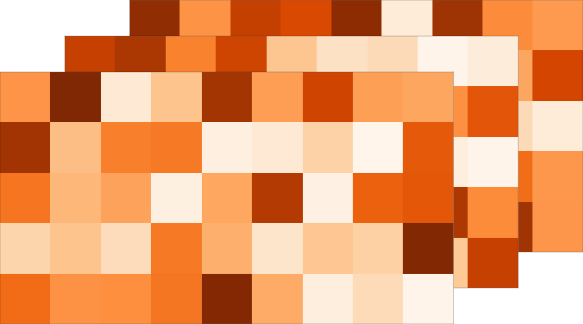 |
|
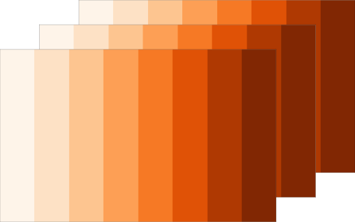 |
Matrix reshaping
We start here with
M = np.zeros((3, 4))
M[2, 2] = 1Starting from the previous matrix, we can reshape it in different ways:
| Code | Result |
|---|---|
M = M.reshape(4, 3) |
.svg)
|
M = M.reshape(12, 1) |
|
M = M.reshape(1, 12) |
|
M = M.reshape(6, 2) |
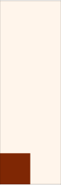 |
M = M.reshape(2, 6) |
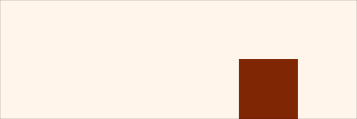 |
Slicing
Start from a zero matrix:
M = np.zeros((5, 9))Starting from the previous matrix, we can slice it in different ways:
| Code | Result |
|---|---|
M[...] = 1 |
|
M[:, ::2] = 1 |
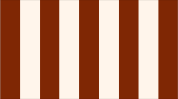 |
M[::2, :] = 1 |
|
M[1, 1] = 1 |
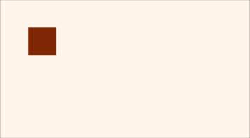 |
M[:, 0] = 1 |
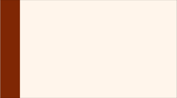 |
M[0, :] = 1 |
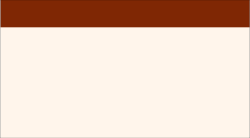 |
M[2:; 2:] = 1 |
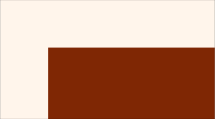 |
M[:-2:, :-2] = 1 |
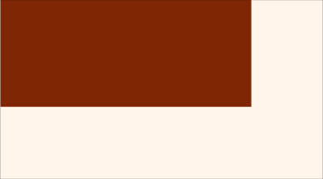 |
M[2:4, 2:4] = 1 |
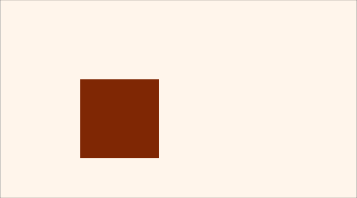 |
M[::2, ::2] = 1 |

|
M[3::2, 3::2] = 1 |
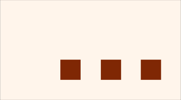 |
Operations on matrices
Start from a simple matrix:
rows, cols = 3, 6
M = np.linspace(0, 1, rows * cols).reshape(rows, cols)Starting from the previous matrix, we can apply the following operations:
| Code | Result |
|---|---|
M.T |
|
M[::-1, :] |
|
M[:, ::-1] |
|
np.where(M > 0.5, 0, 1) |
|
np.maximum(M, 0.5) |
|
np.minimum(M, 0.5) |
|
np.mean(M, axis=0) |
|
np.mean(M, axis=1) |
|
For the last operations note that the dimensions of the matrices are reduced, so you create a vector as a result, with dimensions (6,) or (3,) respectively, when computing the mean along the 0-axis (column-wise mean), respectively along the 1-axis (row-wise mean).
Broadcasting
Broadcasting allows the addition of matrices of different sizes (though this is mathematically wrong), by repeating the smaller ones along the missing dimensions. The only requirement is that the trailing (i.e, rightmost) dimensions match, somehow.
| M | N | M+N |
|---|---|---|
|
|
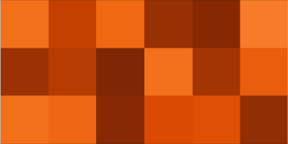 | |
| 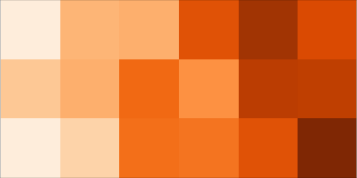 | ||
|
|
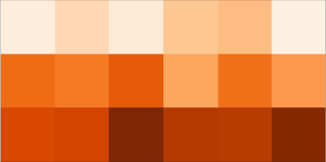 | |
|
|
|
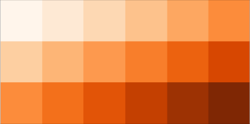 |
Resources
- This work is deeply inspired and adapted from the great work by Nicolas Rougier: https://github.com/rougier/numpy-tutorial